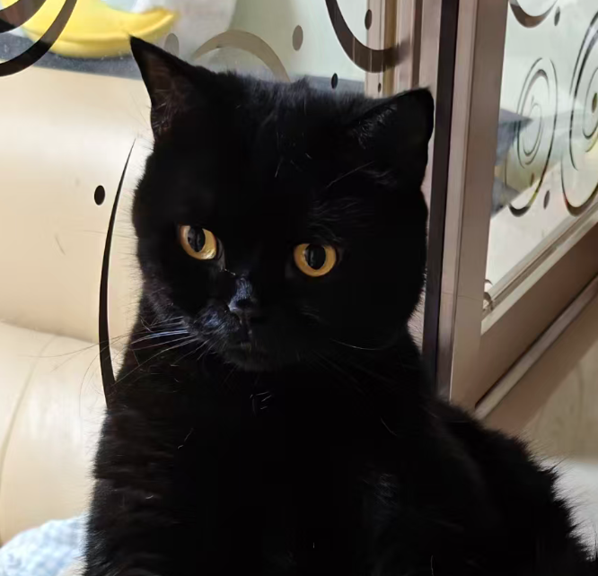
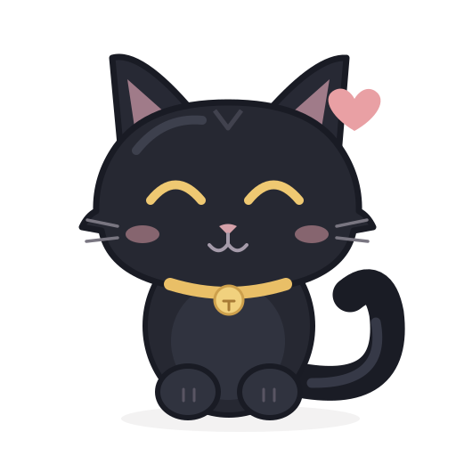

体彩 7 位数
江苏体彩7 位数字 · 按位排列
黑猫白猫，陪你慢慢来
今天也慢慢来，有猫陪着你。

今天也要元气满满陪你安排好每一刻
小管家正在陪你
留下的小脚印
白猫也来陪你
选择你的城市，看看今天的天气

愿美好的小事，悄悄来到你身边。
7 位数字 · 按位排列
红球 6 个 蓝球 1 个
小猫正在准备好运
随机小惊喜，非官方开奖号码。
这是我们相伴的第 1 天
日历提醒需要在系统日历中确认保存。导入、导出后的两份记录独立保存。
删除这条记录？
正在读取未来 90 天的日程…